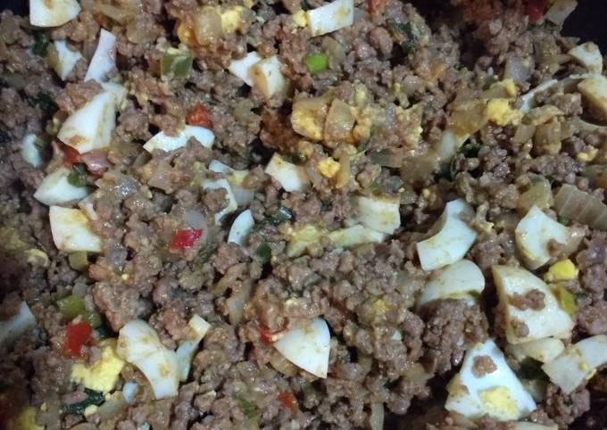

Homepage

Descripción:
La empanada es una masa rellena con carnes, verduras o frutas cocida al horno o frita en aceite o grasa. Su nombre proviene del castellano empanar y es una de las comidas folcloricas del norte argentino.
Ingredientes
Para preparar una buena empanada argentina vamos a necesitar:
- 1 kilo (2,2 libras) de carne molida
- 2 cebollas blancas
- 1/2 kilo (1,10 libras) de cebolla de verdeo
- 1 cabeza de ajo
- 1 pimiento rojo
- 6 huevos duros
- Pasas de uva (opcional)
- Aceitunas sin hueso
- 1 pizca de ají molido
- 1 pizca de comino
- Sal y Pimienta
Preparación:
La preparacion constara de 2 pasos, el relleno y la masa
El relleno:

Para el relleno vamos a hacer lo siguiente:
- En una olla o cacerola grande rehogamos la cebolla y el ajo hasta que agarre un color dorado.
- agregar la carne , el ají y los condimentos.
- Dejamos cocinar hasta que la carne esté lista, y echamos entonces las pasas de uva o las aceitunas.
- Colocamos la preparación en una fuente y picamos los huevos encima sin batir
- Dejamos enfriar por lo menos 4 horas en la nevera para poder rellenar las empanadas una vez tengamos la masa hecha.
La masa:

Ingredientes
- 500 g de harina de trigo
- 2 pellizcos de Sal
- 100 g de mantequilla
- 1 huevo
- 2 cucharadas de aceite de oliva
- 2 cucharadas de leche
- 150 ml de agua tibia
Preparación
- En un bol o reciepiente grande echamos parte de la harina (no hace falta que sea de fuerza). Además, dejamos unas 4 cucharadas de harina separadas para ir engordando la masa.
- En el centro del bol, con una cuchara hacemos un hoyo, e introducimos la mantequilla troceada y el huevo.
- Batimos con una cuchara de madera desde el centro hacia afuera y vamos poco a poco mezclando con la harina.
- Ehamos entonces el aceite y la leche. En un vaso de agua tibia disolvemos la cucharada de sal. Vamos echando poco a poco el agua y seguimos removiendo lo que empieza a ser la masa. Debe quedarte una masa suave y elástica.
- Preparamos la zona donde vamos a amasar, yo suelo utilizar la encimera de la cocina, aunque también puedes utilizar una mesa de cocina. Llenamos la superficie de harina de modo que al extender la masa no se quede pegada. Sacamos la masa del bol y empezamos a trabajar la masa con las manos.
- Poco a poco notaremos que podemos manipular la masa más fácilmente y se irá quedando elástica y homogénea. Este proceso tarda unos 10 minutos. Vamos tornando la masa en una bola.
- El bol lo enharinamos. Introducimos la bola de masa en él. Tapamos el bol con un trapo de algodón y la introducimos en la nevera durante 3 horas. Es importante que la masa enfríe.
- Sacamos la masa de la nevera y esperamos 15 minutos antes de empezar a preparar las empanadillas argentinas
PARA HACER LAS EMPANADAS:
- Comenzamos enharinado la encimera de la cocina y estiramos la masa hecha previamente con el rodillo hasta que nos quede con un espesor de 2 o 3 cm. Cortamos las empanadillas con una taza de unos 15 cm. de diámetro.
- Hemos de añadir el relleno cocinado a cada empanada, 1 cucharada de relleno en cada una. Es muy importante que el relleno este frío para que la masa aguante bien a la hora de freír. Pintamos el borde de la empanada con ayuda de una brocha de cocinar y huevo batido. Tapamos con la otra mitad bien estirada y la sellamos por los bordes trenzando la parte inferior sobre la superior con la ayuda de un tenedor con mucho cuidado no vayas a apretar demasiado y rompas la masa.
- Freímos en abundante aceite de oliva que esté muy caliente. Sacamos las empanadas cuando estén doradas, las ponemos en un plato con papel absorbente y listas para comer. Lo mejor es servirlas con un buen vino tinto.

Return to top